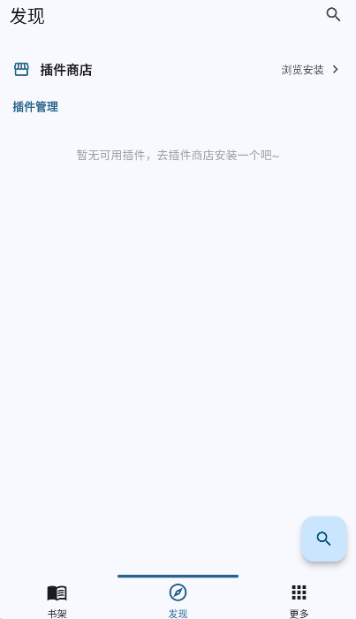

Breeze 上手一周：从五个漫画 App 缩成一个，说点真话
多平台追漫党一定懂装五六个漫画 App 来回切的痛苦。Breeze 把收藏、历史、下载全收进一个界面，开源无广告、跨平台覆盖广，但 iOS 侧载门槛也得提一句。
上周突然想翻一部几年前看过的老漫，名字模糊得只剩个大概。哔咔搜了没有，禁漫也没命中，又去翻腾讯动漫的书架——来回切了四个 App 窗口，最后才在某个小众来源里找到。放下手机那一刻我就想，有没有一个能把这堆东西收进去的？搜了一圈，在它的官网上看了下介绍，Breeze 就这么进了手机。
初印象：装得快、界面稳，但 iOS 用户得费点劲
Android 用户最省心，从官方下载拿到 APK 装上就完事，没有弹窗问你要不要看广告、没有引导你注册账号、也没有"首次启动需要联网"的等待圈。打开 Breeze 第一眼是插件商店——云端分发的设计比我之前用的同类工具舒服多了，不用去论坛搜插件文件、不用手动导入、不用处理版本冲突。搜"哔咔"出来直接点安装，三十秒左右搞定，整个流程干净得像在装一个系统应用。

但我得说句实在话，iOS 用户的门槛挺高。Breeze 不像其他漫画 App 那样能直接在 App Store 下，得走侧载路线——AltStore、Sideloadly、TrollStore 这几个名字，普通用户听都没听过。而且侧载完还有定期重签的问题，两周或者一个月就得重新装一次。如果你用的是 iPhone 又不想折腾，Breeze 暂时跟你没太大关系。
跨平台这点倒是真靠谱。Flutter 写的，除了 Android 和 iOS，还覆盖了 Windows、macOS、Linux 和鸿蒙——我试了下在桌面端打开，界面不是简单放大手机版，排版专门针对大屏调过。
实际用下来最爽的三件事
第一件事是全局搜索。右上角那个放大镜，一按下去所有已安装的插件同时跑搜索。这对"我记得有这部漫画但忘了在哪看的"这种场景来说简直救命。之前那部老漫，全局搜直接在禁漫来源里命中了，省了我至少三分钟的切换时间。当然，你也可以在发现页每个插件的入口旁边点独立搜索，只搜当前这个来源——有时候就想在哔咔搜，不想混进来自禁漫的结果，这点灵活性我很喜欢。
第二件事是收藏追更的完整度。我同时追四十多部漫画，以前用官方 App 的时候，更新时间排序经常把我看晕——哪部刚更的、哪部攒了三话没看，混在长列表里根本找不着。Breeze 的"按观看时间排序"解决了这个问题：你最近在看的那部永远在最上面，不用一个个扫。v3.0.34 还加了未读汇总和全部已读的批量操作，刚追完大更新的时候，一键把所有小红点清掉，省心。
文件夹分类也有用。我建了"在追""完结待补""老漫回味"三个文件夹，把四十多部拖进去之后，收藏页瞬间清爽了。拖拽操作比我预想的顺手，长按空白处就能新建文件夹，多选之后批量移入，整个过程没有卡顿。
第三件事是书架的三条主线设计。收藏、历史、下载三个标签，各干各的活不混在一起。收藏跟着平台账号同步，换设备登录自动恢复；历史按阅读时间倒序，接上你之前看到哪一话；下载单独放一个标签，地铁上没网的时候翻离线内容。这种拆分不是为了显得功能多，而是真的解决了"收藏了几十部、看过几百部、下载了一堆章节"的人在同一个大列表里找不着东西的痛点。

有件事我得提醒你
书架跟着来源走——切到禁漫来源，哔咔的收藏列表就空了。第一次用的时候我以为收藏丢了，吓出一身冷汗，后来才搞明白这是 Breeze 的设计：每个来源的收藏数据跟着各自的平台账号，不会混在一起。逻辑上完全合理，哔咔和禁漫是两个独立的内容生态，数据不该交叉。但体验上确实有个小坑，新用户第一次切来源的时候最好有个提示，不然真的会慌。
另外，插件偶尔需要更新才能适配平台的新接口——比如某个漫画平台突然改了搜索逻辑，对应的插件就得跟上。这点对不常逛论坛的用户来说可能没概念，哪天突然搜不到漫画了还以为 Breeze 坏了。我后来去breeze文档翻了一下才搞明白插件更新的逻辑，不过版本更新确实密集，我装了一周已经收到两次更新推送了，修复速度还行。
适合谁，不适合谁
适合的人：同时追多个漫画平台、手机和桌面之间切换着看、在意开源透明不想被广告打扰的读者。还有一种情况——你想自己写插件扩展来源，Breeze 的插件机制就是为此设计的。
不太适合的人：只在一个平台看漫画、不想折腾插件安装、iOS 又不会侧载的。这些情况下，好好用官方 App 反而更省心。
说实话，开源、免费、无广告、跨平台——这几个词放在一起就是 Breeze 最大的竞争力。它没有花哨的社交功能、没有会员付费、没有推荐算法给你喂流量，就是老老实实做一个统一入口，让你在一个界面里读完所有想看的漫画。多平台追漫党真的可以试试，省下来的时间不如多看两话。